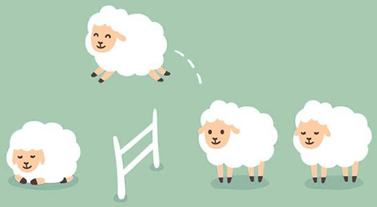

Исчисляемые и неисчисляемые существительные
Тема артиклей неразрывно связана с темой исчисляемых и неисчисляемых существительных, поэтому с них мы и начнём. Но сначала разомнёмся и посчитаем до десяти.
Количественные числительные от 1 до 10
1 /wʌn/ one
2 /tuː/ two
3 /θriː/ three
4 /fɔː/ four
5 /faɪv/ five
6 /sɪks/ six
7 /'sev(ə)n/ seven
8 /eɪt/ eight
9 /naɪn/ nine
10 /ten/ ten
К исчисляемым существительным относятся существительные, которые можно посчитать. Например:
One sheep, two sheep, three sheep etc.
Одна овечка, две овечки, три овечки и т.д.
Как вы поняли, овечек мы посчитать можем, значит, существительное ‘sheep’ у нас исчисляемое.
Неисчисляемые существительные это такие существительные, которые нельзя посчитать, при этом грамматически у них всегда единственное число. Это могут быть разные вещества, материалы, продукты, чувства, переживания, науки, увлечения и другие ‘отвлечённые’ понятия. Перед ними неопределенный артикль a/an не ставится. Например:
advice /əd'vaɪs/ совет(ы)
air /eə/ воздух
coffee кофе
fire /'faɪə/ огонь
furniture мебель
glass стекло
gold /gəʊld/ золото
grammar грамматика
happiness счастье
history история
honey /'hʌnɪ/ мёд
information информация
kindness /'kaɪndnəs/ доброта
knowledge /'nɔlɪʤ/ знание
milk молоко
money /'mʌnɪ/ деньги
news /njuːz/ новости
physics /'fɪzɪks/ физика
power /'paʊə/ сила, власть
salt соль
sand песок
success /sək'ses/ успех
sugar /'ʃʊgə/ сахар
tea чай
time время
water вода
и др.
Примеры из пословиц и цитат:
Time is money. Время – деньги.
Knowledge is power. Знание – сила.
‘Kindness is the language which the deaf can hear and the blind can see.’ (Mark Twain)
Доброта – язык, который могут слышать глухие и видеть слепые. (Марк Твен)
‘Success is not the key to happiness. Happiness is the key to success.’ (Albert Schweitzer)
Успех – не ключ к счастью. Счастье – ключ к успеху. (Альберт Швейцер)
Перед ‘hear’ и ‘see’, в примере выше, нет частицы ‘to’ из-за модального глагола can мочь, который обычно произносится в безударном положении как /kən/. После него все глаголы стоят в начальной форме, но без частицы ‘to’.
Некоторые существительные могут быть как исчисляемыми, так и неисчисляемыми. Например, мы уже знаем слово ‘glass’ как ‘стакан’. В этом случае мы можем сказать ‘a glass of water’ (стакан воды). Просто же ‘glass’ означает ‘стекло’, а ‘glasses’ это ‘очки’.
Некоторые существительные сложно разглядеть как исчисляемые. Например, слово ‘sky’ (небо) является исчисляемым. Во множественном числе у него обычная множественная форма: skies (небеса). Другие наоборот, кажется, что мы их можем посчитать, но нет, например, слово advice. Переводится оно обычно как ‘совет’, но в английском языке имеет множественное значение.
Но часто нам всё-таки надо как-то сообщить, что идёт речь об одном объекте или о некотором его количестве. В первом случае используют различные дополнительные слова, уточняющие нужное нам слово. Например, для жидкостей мы можем использовать слова: glass (стакан), cup (чашка), bottle (бутылка) и др.
a glass of water – стакан воды
a cup of coffee – чашка кофе
a bottle of wine – бутылка вина
Часто уточняющим словом является слово ‘piece’ /piːs/, которое может переводиться по-разному или не переводиться совсем. Например:
a piece of advice – совет
a piece of furniture – предмет мебели
a piece of glass – кусок/кусочек/осколок стекла
a piece of news – новость
a piece (или a grain) of sand – крупинка песка, песчинка
a piece (или a bit) of information* – информация (какой-то один факт)
* Обратите внимание, что окончания -tion и -ssion (например, mission /'mɪʃ(ə)n/ миссия) читаются как /ʃ(ə)n/.
some и any
Если же вам надо сказать о некотором количестве существительных, как исчисляемых, так и неисчисляемых, вы можете использовать ‘some’ /sʌm/ (в утвердительных предложениях, а также в вопросах-просьбах или вежливых предложениях) или ‘any’ /'enɪ/ (в отрицательных или вопросительных предложениях). ‘Some’, в данном случае, чаще будет переводиться как ‘немного, несколько’. ‘Any’ в вопросительных предложениях часто не переводится, а в отрицательных может переводиться как ‘никакой, ни один; нисколько’. Например:
I have some beautiful flowers for you. – У меня для тебя несколько красивых цветков.
Please give me some milk. – Дайте мне, пожалуйста, (немного) молока.
Does she want some oranges? – Она хочет немного апельсинов? (ей предлагают)
She doesn’t want any oranges. – Она не хочет никаких апельсинов.
Do you have any news? – Есть новости? (досл.: У тебя/вас есть какие-нибудь новости?)
I don’t have any news. – У меня нет никаких новостей.
many и much
Мы уже знаем фразу ‘a lot (of)’ со значением ‘много’. Её можно использовать с любыми существительными. Синонимами этой фразы являются слова: many /'menɪ/ для исчисляемых существительных и much /mʌʧ/ для неисчисляемых существительных. ‘A lot (of)’ (или ‘lots (of)’ во мн. ч.) чуть более разговорная фраза.
I don’t see many trees outside. – Я не вижу много деревьев на улице (досл.: снаружи).
It’s because we don’t have any. – Это потому, что у нас их нет (досл.: у нас нет никаких).
You don’t have much time. – У тебя мало времени (досл.: не много).
(a) few и (a) little
Со словом ‘мало’ тоже используются разные слова: few /fjuː/ для исчисляемых и little /'lɪtl/ для неисчисляемых. Однако, если перед ними стоит неопределенный артикль ‘a’ (a few и a little), то они переводятся как ‘немного’. В данном случае ‘a’ не выполняет функцию артикля, а просто так там стоит, как это часто бывает в английском языке... Кроме того, ‘a little’ может заменять слово ‘some’, о котором мы говорили выше, если оно будет стоять перед неисчисляемыми существительными. Если же ‘a’ перед ними не стоит (few и little), то в значении появляется негативный оттенок того, что чего-то ‘ну очень мало’. Например:
I have a little time to help you with this. – У меня есть немного времени (чтобы) помочь тебе с этим.
I have little time to help you with this. – У меня (очень) мало времени, чтобы помочь тебе с этим (скорее всего, помогать не будут).
I have a few ideas about it. – У меня есть несколько идей на этот счет (досл.: об этом).
I have few ideas about it. – У меня (очень) мало идей на этот счет.
little и small
Если же ‘little’ стоит перед исчисляемыми существительными, то оно становится простым прилагательным со значением ‘маленький’. Но у нас уже есть ‘small’ с таким же значением. ‘Small’ является как бы нейтральным прилагательным и по значению может больше напоминать слово ‘небольшой’, как антоним к слову ‘big’ (большой). Также оно может подчеркивать незначительность, кратковременность чего-либо. ‘Little’ же, в свою очередь, помимо размера, часто несёт и некоторую эмоциональную окраску, либо обозначает возраст. Например:
We live in a small flat. – Мы живём в небольшой квартире.
She is a pretty little girl. – Она милая маленькая девочка.
I have a small cat. = I have a little cat. – У меня есть маленькая кошка. (нейтральное предложение)
I have a pretty little kitten. (не small kitten) – У меня есть миленький маленький котёнок. (эмоциональное предложение)
Следующие предложения сложные для перевода. Дан один из переводов. Возможно, вы бы смогли перевести лучше?
She was a small little girl. – Она была невысокая юная девочка.
Daddy loves his little big man. – Папочка любит своего большого малыша (досл.: маленького большого человека/мужчину).
thing
thing /θɪŋ/ вещь, дело и др. Слово thing очень многозначное, его постоянно используют, когда не знают или забыли, как что-то называется, например: What is this... thing? Что это за... вещь? Используется оно также и в приветствии: How are things? Как дела?.
В этом уроке оно нам интересно, потому что соединяется с ‘some’ и ‘any’. Получается:
‘Something’ /'sʌmθɪŋ/: что-нибудь, что-то.
‘Anything’ /'enɪθɪŋ/: 1) что-нибудь (в вопросительных предложениях); 2) ничто, ничего (в отрицательных предложениях); 3) всё; всё, что угодно (в утвердительных предложениях, обычно в будущем времени).
Mum, please give me some (или a little) money to buy something for lunch. – Мам, дай мне, пожалуйста, немного денег, чтобы купить себе что-нибудь на обед.
Do you want to add anything? – Хочешь что-нибудь добавить?
I don’t have anything to do. – Мне нечего делать.
Подытожим тему исчисляемых и неисчисляемых существительных следующим интересным сравнением:
Чем пират отличается от учителя?
С неисчисляемыми существительными
С исчисляемыми существительными

A pirate...
A teacher...
...has some rum on the ship.
...есть немного рома на корабле.
...has some books at home.
...есть немного книг дома.
...doesn’t use any shampoo.
...не пользуется шампунем.
...doesn’t take any prisoners (if they do their homework).
...не берёт пленных (если они делают свою домашнюю работу).
...doesn’t drink much milk.
...не пьёт много молока.
...gives many lessons*.
...преподаёт много уроков.
...has a lot of treasure.
...есть много сокровищ.
...has a lot of good students.
...есть много хороших студентов.
...has a little knowledge about the sea.
...есть немного знаний о море.
...has a few ways to deal with children.
...знает, как справиться с детьми. (досл.: ...есть несколько способов справиться)
...has little patience.
...(есть) мало терпения.
...knows few bad words.
...знает мало плохих слов.
* Примечание:
to give a lesson – давать/преподавать урок;
to teach (smb.) a lesson – проучить (кого-либо), преподать урок (кому-либо)
Словарь
advice /əd'vaɪs/ совет(ы)
any /'enɪ/ никакой, ни один; нисколько
anything /'enɪθɪŋ/ 1) что-нибудь; 2) ничего
bad /bæd/ плохой
because /bɪ'kɔz/ потому что, так как
buy /baɪ/ покупать
few /fjuː/ мало; несколько
flat /flæt/ n. квартира; adj. плоский
furniture /'fɜːnɪʧə/ мебель
glass /glɑːs/ 1) стекло 2) стакан
hear /hɪə/ слышать
idea /aɪ'dɪə/ идея; мысль
information /ˌɪnfə'meɪʃ(ə)n/ информация
key /kiː/ ключ
lesson /'les(ə)n/ урок
little /'lɪtl/ 1) маленький; 2) мало, немного
many /'menɪ/ много; многие
milk /mɪlk/ молоко
much /mʌʧ/ много
news /njuːz/ новости
on /ɔn/ на, в
orange /'ɔrɪnʤ/ n. апельсин; adj. оранжевый
piece /piːs/ кусок и др.
pirate /'paɪərət/ пират
pretty /'prɪtɪ/ милый; хорошенький, симпатичный
prisoner /'prɪz(ə)nə/ пленник; заключенный
sea /siː/ море
ship /ʃɪp/ корабль
sky /skaɪ/ небо
some /sʌm/ немного, несколько
something /'sʌmθɪŋ/ что-нибудь, что-то
thing /θɪŋ/ вещь, дело
time /taɪm/ время
treasure /'treʒə/ сокровище
Дополнительные слова:
air /eə/ воздух
blind /blaɪnd/ слепой
can /kən/ мочь
deaf /def/ глухой
deal /diːl/ (with) справляться с (ситуацией)
fire /'faɪə/ огонь
glasses /'glɑːsɪz/ очки
gold /gəʊld/ золото
happiness /'hæpɪnəs/ счастье
if /ɪf/ если
kindness /'kaɪndnəs/ доброта
kitten /'kɪt(ə)n/ котёнок
language /'læŋgwɪʤ/ язык, речь
outside /ˌaut'saɪd/ снаружи
patience /'peɪʃ(ə)n(t)s/ терпение
power /'paʊə/ сила, власть
rum /rʌm/ ром
salt /sɔːlt/ соль
sand /sænd/ песок
shampoo /ʃæm'puː/ шампунь
success /sək'ses/ успех
their /ðeə/ их, свой
way /weɪ/ 1) способ 2) путь; дорога
word /wɜːd/ слово
Упражнения
Упражнение 1. Распределите существительные по группам: исчисляемые и неисчисляемые. Словам из обязательного списка для изучения не дан перевод, т.к. вы должны их знать. Подсказка: в каждой группе по 15 слов.
anger /'æŋgə/ злость; cup; field /fiːld/ поле; fish; flower; flour /'flaʊə/ мука; furniture; grass /grɑːs/ трава; honey /'hʌnɪ/ мёд; horse /hɔːs/ лошадь; lion /'laɪən/ лев; love; meat /miːt/ мясо; money; news; orange; paper /'peɪpə/ бумага; piece; power /'paʊə/ власть; ring /rɪŋ/ кольцо; sea; sky; snow /snoʊ/ снег; spoon /spuːn/ ложка; sugar /'ʃʊgǝ/ сахар; thing; time; tooth; window; wool /wʊl/ шерсть.

Упражнение 2. Переведите с английского на русский.
- John has many friends.
- I don’t want any food.
- Please give me some water.
- She has much work to do.
- He has little happiness in life.
- They have few words to say.
- Pirates don’t sail (плавают) on little ships.
- Here is a little information for you.
- I have a few ideas, but they are bad.
- Do you have anything to say?
- – I need (Мне нужен) some advice. – I have a piece of advice for you.
- He wants to buy some pieces of furniture because his flat is empty (пустая).
Упражнение 3. Переведите с русского на английский.
- Купи немного апельсинов, картошки и помидоров.
- Джон говорит немного по-русски.
- Очень важно поесть что-нибудь днём.
- Она хочет остаться и сделать несколько дел.
- Дайте нам, пожалуйста, немного времени подумать. Мы не готовы.
- «У тебя есть (какие-нибудь) новости?» «Да, сейчас выходные!» «Замечательные новости!» (также переведите: Это просто замечательная новость.)
- У нас мало информации об этой школе.
- У него мало зубов, потому что он ещё маленький.
- Он знает мало (информации) о цветах.
- Я вижу много странных вещей в жизни.
- Тот парк был длинным. Я всё ещё слышу несколько красивых песен тех птиц (birds).
- Я не хочу делать никакие уроки. Я не хочу ничего делать. Я хочу идти спать.
Упражнение 4. Перед сном посчитайте овечек таким образом:
One little sheep, two little sheep, three little sheep, four little sheep, five little sheep, six little sheep, seven little sheep, eight little sheep, nine little sheep, ten little sheep.
Постарайтесь уснуть до того, как досчитаете до 10, потому что дальше мы считать ещё не умеем.")
Аудио-вырезка из детской колыбельной с youtube канала The Kiboomers:
В конце: "Counting 10 little sheep to sleep" – считаем 10 маленьких овечек, чтобы уснуть.
